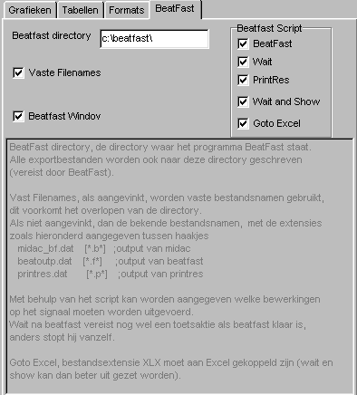
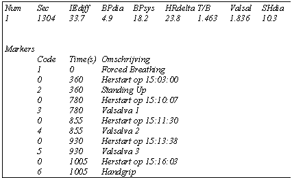
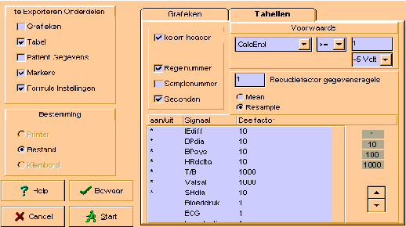

RF 2, Onset Systolische Bloeddruk
|
De export van data kan op een aantal verschillende manieren worden gestart:
Deze manier is vooral bedoeld om tijdens het bekijken van een gemaakte opnam, snel kleine stukken uit een opname te exporteren naar een ander programma (via bestand of clipboard).
Daarom is er zelfs een mogelijkheid ingebouwd om deze kleine stukken te exporteren, zonder expliciet de export instellingen te behoeven in te stellen. Door namelijk in de TestOrganizer een configuratie (of analyse) bestand op te geven, met daarin de juiste export settings, worden alle exports via de meetcursor uitgevoerd volgens het opgegeven configuratie bestand, ongeacht de export settings in het betreffende patient bestand. Uiteraard gaat dit alleen goed als er identieke opnamen worden bekeken.
BeatFast is een programma voor het berekenen van hemodynamische parameters uit een continue bloeddruk signaal. Zowel de DOS versie van beatfast alsook de windows-versie Beatscope worden ondersteund.
Als voor het export formaat BeatFast wordt geselecteerd, wordt niet alleen een speciaal binair output formaat gegenereerd met 100 Hz sampling, maar wordt ook de mogelijkheid geboden direct BeatFast, eventueel gevolgd door PrintRes, te starten en de resultaten direct te bekijken in een memo of zelfs Excel..
Voor een nauwkeurige werking van het programma BeatFast is het nodig geslacht, gewicht en lengte van de patient te kennen. Als deze gegevens netjes in de TestOrganizer zijn ingevoerd, worden ze ook overgeheveld naar BeatFast (waarbij bovendien de sexe wordt vertaald van Nederlands naar Engels).
Hieronder is het speciale export instelvenster voor BeatFast afgebeeld.
|
 |
BeatFast Directory
Uiteraard moet Midac weten waar het programma BeatFast zich bevindt, vandaar dat de directory moet worden opgegeven. Tevens zullen de uitvoer bestanden in deze directory worden geplaatst, omdat BeatFast geen lange paden accepteert.
Ook de windows versie is in feite een user-wrapper rondom een dos-programma en dus korte bestandsnamen !!
Vaste Filenames
Door vaste bestandsnamen te gebruiken, wordt voorkomen dat de beatfast directory volloopt met allerlei tussen bestanden, nadeel is dat deze tussenbestanden niet meer beschikbaar zijn.
Als geen vaste bestandsnamen worden gebruikt, wordt de naamgeving van de bestanden op de bekende Midac manier uitgevoerd (naam=patientnummer, extensie=letter+volgnummer), hetgeen resulteert dit in de volgende bestanden
*.B* export file van Midac in BeatFast formaat
*.F* het output bestand van BeatFast
*.XLX het output bestand van PrintRes
Als vaste bestandsnamen worden gebruikt, resulteert dit in de volgende bestanden
MIDAC_BF.DAT export file van Midac in BeatFast formaat
BEATOUTP.DAT het output bestand van BeatFast
PRINTRES.DAT het output bestand van PrintRes
Als de Midac bestandsnamen niet voldoen aan de oude Dos voorwaarden (naam.extensie = 8.3), worden eveneens de vaste bestandsnamen toegepast.
Beatfast Aankruisvakje bepaalt of na het genereren van de exportfile, het programma BeatFast automatisch moet worden gestart.
Sexe, lengte en gewicht worden (mits ingevuld) automatisch doorgegegeven.
BeatFast wordt opdracht gegeven de berekening volgens de modelflow methode te doen.
Afhankelijk of na het runnen van BeatFast gewacht moet worden, wordt voor de snelheid high of very opgegeven.
Afhankelijk van het aankruisvak "Vaste Filenames" worden de juiste bestandsnamen opgegeven.
Dit resulteert uiteindelijk in de volgende opdrachtregel (in dit geval vrouw, 47 jaar, lengte 158 cm, gewicht 58 kg, niet wachten)
beatfast.exe f47 h186 w58 mf100 very <inputfile> ch1 fin1 mrk0 <outputfile> Wait Aankruisvakje Als aangekruist, dan wordt BeatFast in de high-speedmode gerunt, zodat de gegevens in BeatFast kunnen worden bekeken. LET OP, als BeatFast alle data heeft ingelezen, wordt BeatFast na enkele seconden automatisch afgebroken, tenzij men op een toets (bijv. pijl naar links) drukt. Dit is een eigenschap van BeatFast en kan niet door Midac ondervangen worden.
Als dit vakje niet aangekruist is, wordt BeatFast in de veryhigh-speed gerund (er worden geen signalen getoond).
Printres Aankruisvakje bepaalt of na het runnen van Beatfast ook nog PrintRes moet worden gerund. (Het vakje heeft geen betekenis als er geen Beatfast is gerund).
Ook heir worden sexe, lengte en gewicht doorgegeven, hetgeen resulteert in de volgende opdrachtregel:
printres.exe f47 h186 w58 [<inputfile> beat ab1 tsr ]<outputfile> Wait Aankruisvakje Als dit vakje is aangekruist (hetgeen uiteraard alleen betekenis heeft als ook Printres is aangekruist), dan wordt de data uit Printres getoond in een venster van Midac.
Midac transporteert een beatfast bestand altijd naar de beatfast directory,
<beatfast-directory>\...
als de filenaam niet aan de oude dos-voorwaarde voldoet, wordt de volgende standaard filename gebruikt:
<beatfast-directory>\midac_bf.dat
Beatfast exporteert zijn resultaat altijd naar het volgende bestand
<beatfast-directory>\beatoutp.dat
BeatFast directory, de directory waar het programma BeatFast staat.
Alle exportbestanden worden ook naar deze directory geschreven
(vereist door BeatFast).
Vast Filenames, als aangevinkt, worden vaste bestandsnamen gebruikt,
dit voorkomt het overlopen van de directory.
Als niet aangevinkt, dan de bekende bestandsnamen, met de extensies
zoals hieronderd aangegeven tussen haakjes
midac_bf.dat [*.b*] ;output van midac
beatoutp.dat [*.f*] ;output van beatfast
printres.dat [*.p*] ;output van printres
Met behulp van het script kan worden aangegeven welke bewerkingen
op het signaal moeten worden uitgevoerd.
Wait na beatfast vereist nog wel een toetsaktie als beatfast klaar is,
anders stopt hij vanzelf.
========
Data Exporteren
1. Inleiding
2. Maken van een export protocol
3. Export Instellingen
4. Numerieke export van een individuele opname
5. Numerieke export van een gehele groep patiënten
6. Numerieke gegevens naar een patiëntverslag
7. Grafische plaatjes exporteren
8. Protocol-instellingen en rekenformules exporteren
9. MIDAC interne bestandsopbouw
10. Voorbeelden
1. Inleiding
De volgende informatie kan worden geëxporteerd naar printer, klembord of bestand.
? Grafische Plaatjes
? Numerieke Data
? Systeem Instellingen
Zowel de opgenomen signalen alsook berekende signalen/waarden kunnen worden geëxporteerd.
Data kan per individuele opname alsook per patiënten-groep worden geëxporteerd.
Het export bestand kan een ASCII-bestand danwel een binair bestand zijn.
Het ASCII-bestand is een tab-delimited bestand. Deze bestandsvorm kan door alle moderne programma’s worden gelezen. In het ASCII bestand kunnen de kolommen automatisch voorzien worden van een titel. Er kunnen extra kolommen worden toegevoegd, regelnummer, sample-nummer, tijd in msec. Bij een export van een patientengroep naar een gezamenlijk bestand worden automatisch kolommen met bestandsnaam, bestandsextensie en bestandsdatum toegevoegd.
Het binaire bestand is de meest eenvoudige vorm, zonder header, onder andere geschikte voor directe invoer in FAST BEAT.
Bij kanalen met gereduceerde samplefrekwenties, worden de ontbrekende waarden opgevuld met herhalingen van het laatste samplepunt.
Indien regelmatig ruwe data wordt bewerkt met andere programma’s, is het aan te bevelen een invoerprogramma te maken dat direkt de binaire bestanden van MIDAC kan lezen. Hierdoor wordt tijd en diskruimte gespaard.
Belangrijk om te weten; ook de instellingen van de exportgegevens worden bewaard in het configuratie bestand. Sommige export funkties werken vanuit het hoofdprogramma, de MID-TestOrganizer.
2. Maken van een export protocol
Een export-protocol is in principe niet verschillend van een opname-protocol. De export settings worden namelijk in het zelfde protocol-bestand opgeslagen als de schermopbouw e.d.. In het algemeen zal men bij het maken van een opname-protocol echter nog niet de exportparameters expliciet hebben gedefiniëerd. Bovendien zijn er vaak redenen om een export-protocol te laten afwijken van een opname-protocol, bijvoorbeeld omdat men slechts een beperkt tijdsdeel van de opname wil exporteren of omdat men extra rekenfunkties wil laten uitvoeren.
? maak eerst een opname-protocol
? maak een reële opname met dit opname-protocol
? bekijk de opname, kontroleer met name de calibratie van de signalen
? als het opname-protocol gecorrigeerd is, kopiëer het dan terug naar het protocol model
b.v. copy …\mid-data\polygraf\plethys\0001.c1 ….\protocol\polygraf\plethys.ini
? bekijk nu de opname opnieuw, en maak het nu gereed voor export
wijzig zonodig de schermopbouw
wijzig zonodig de rekenkanalen
leg de export gegevens expliciet vast
? start export en kontroleer de resultaten (zonodig met handmetingen)
? kopiëer het protocol nu naar het protocol model
b.v. copy …\mid-data\polygraf\plethys\0001.c1 ….\protocol\polyscan\plethys.ana
Er zijn diverse manieren om een export-protocol te maken. Beginnende gebruikers kunnen het volgende kookboek gebruiken.
Een eenmaal gemaakt export protocol kan nu eenvoudig bij iedere opname worden gebruikt (zie paragraaf Numerieke Export van individuele opnamen).
In de volgende paragraaf wordt het instelscherm behandeld waarin de exportgegevens worden ingesteld.
3. Export Instellingen
4. Numerieke export van een individuele opname
Individuele opnamen kunnen als ASCII of binair bestand worden geëxporteerd.
Met behulp van de normale rekenfunkties kunnen delen van de informatie numeriek worden geëxporteerd (zie voorbeelden). De geëxporteerde data kan worden gecomprimeerd door resampling of mean-berekening.
Er van uitgaand dat er een export protocol beschikbaar is, kan de volgende werkwijze worden gehanteerd:
? MID-TestOrganizer, selekteer gemaakte opname om te bekijken
? MIDAC, druk op de config-knop om het export-protocol te selecteren
? Zet nu de exportinstellingen goed
? Start de export
5. Numerieke export van een gehele patientengroep
Een gehele groep opnamen kan in één keer worden geëxporteerd. Hierbij kan men naar keuze, van iedere opname een afzonderlijk export bestand laten maken, danwel één totaal export-bestand waarin alle geselecteerde opnamen tezamen zijn opgenomen.
In dit laatste geval, worden de data van alle patienten naar één bestand geschreven, één regel per patient. Aan deze regel worden automatisch bestandsnaam, bestandsextensie en bestandsdatum toegevoegd. Deze methode leent zich uitstekend als voorbereiding op statistisch onderzoek, waarbij de geëxporteerde data slechts uit enkele parameters bestaat. In plaats van de individuele configuratie bestanden behorend bij ieder individueel databestand, wordt hier voor alle patiënten een expliciet op te geven configuratie bestand uit POLYSCAN gebruikt. Dit garandeert dat alle patiënten op dezelfde wijze worden verwerkt. Bedenk wel dat het exporteren van een bestand van 100Hz / 10 min al gauw enkele minuten kan vergen (afhankelijk van de hoeveelheid rekenwerk).
Ook als men een alternatief rekenalgoritme op een grotere groep opnamen wil testen, is dit de manier om de computer aan het werk te zetten. De analyse van de Autonome Neuropathie Test en Perifere Flow vormen een goed voorbeeld.
? MID-TestOrganizer, selecteer een protocol uit de PolyExport module
? MID-TestOrganizer, druk op knop Export
? geef een masker voor de gewenste opname bestandsnamen
? Geef aan of individueel uitvoerbestand of gezamenlijk uitvoerbestand
? In het laatste geval wordt de gewenste export bestandsnaam opgevraagd
? Start de export
6. Numerieke gegevens naar een patiënten-verslag
In een patiëntverslag kunnen resultaten van allerlei testen worden opgenomen, zo ook de resultaten van een polygrafie resultaat.
Dit wordt nog verder uitgewerkt.
? MID-TestOrganizer, selecteer gewenste patient
? MID-TestOrganizer, druk op knop Export
? nog verder uit te werken
7. Grafische plaatjes exporteren
Grafische plaatjes kunnen enkel per individuele opname worden uitgevoerd. De uitvoer kan naar de printer of het klembord geschieden. Ruwweg zijn er de volgende mogelijkheden:
? export van het actuele scherm (inclusief meetcursor en bijbehorende meetresultaten)
? export van 1 of meerdere actuele vensters
? export van 1 of meer vensters over de gehele opname (alleen naar printer)
Het Exporteren van grafische plaatjes gaat op de volgende manier:
? MID-TestOrganizer, kies gewenste opname
? MID-TestOrganizer, druk op knop Bekijken
? MIDAC, kies zonodig een meer geschikter configuratie bestand (Config Knop)
? MIDAC, Export knop
? MIDAC, Grafisch
? MIDAC, Instellen tijdsvenster
? MIDAC, Instellen te exporteren vensters
? MIDAC,Instellen bestemming
8. Protocol-instellingen en rekenformules exporteren
Alle protocol instellingen zijn opgeborgen in een normaal Windows ini-bestand. Dit bestand is dus een normaal ASCII bestand dat kan worden afgedrukt. Wijzig dit bestand niet, daar dan de goede werking van het programma niet meer kan worden gegarandeerd.
Een compleet overzicht van alle gebruikte rekenformules en de daarbij ingestelde signalen en parameters kan op de volgende manier worden verkregen
9. MIDAC interne bestandsopbouw
Nog uit te werken.
10. Voorbeelden
Onderstaand voorbeeld is een analyse rapport van een autonome neuropathie test.

3. Export Instellingen
Signalen aan/uit zetten:
dubbelklik op het signaal
Signaal Volgorde wijzigen
selecteer signaal, verplaats met op/neer toetsen
Signaal deeltal wijzigen
selekteer signaal, klik op gewenst deeltal
Voorwaarde
Met behulp van de voorwaarde kan het aantal uitvoerregels worden gereduceerd.
Wil men alle samples uitvoeren, dan dient de volgende instelling gebruikt te worden
<willekeurig AD-signaal> >= 0
Bij testen van de voorwaarde wordt het opgegeven signaal (AD-kanaal of rekenkanaal) op basis van de interne waarde vergeleken. Wil men in Volt vergelijken, dan kan een voorgeprogrammeerde waarde uit de combobox worden geselekteerd.

Met
Deze functie blablabla....
Deze functie blablabla....
Deze functie blablabla....
Data-Acquisitie Flexibele display opbouw
Flexibele display opbouw Intelligente SampleReductie
Intelligente SampleReductie
 Protocol gestuurde opnam
Protocol gestuurde opnam
© Copyright Instrumentele Dienst
SM/GvV, 20-3-1998